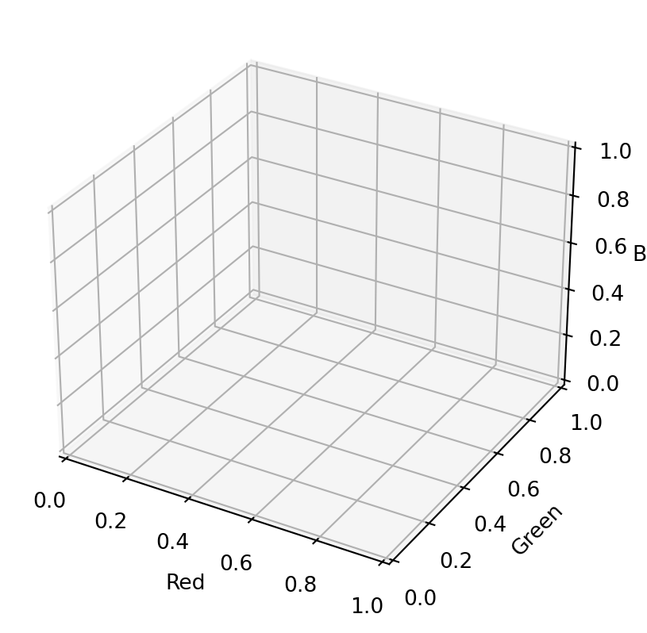
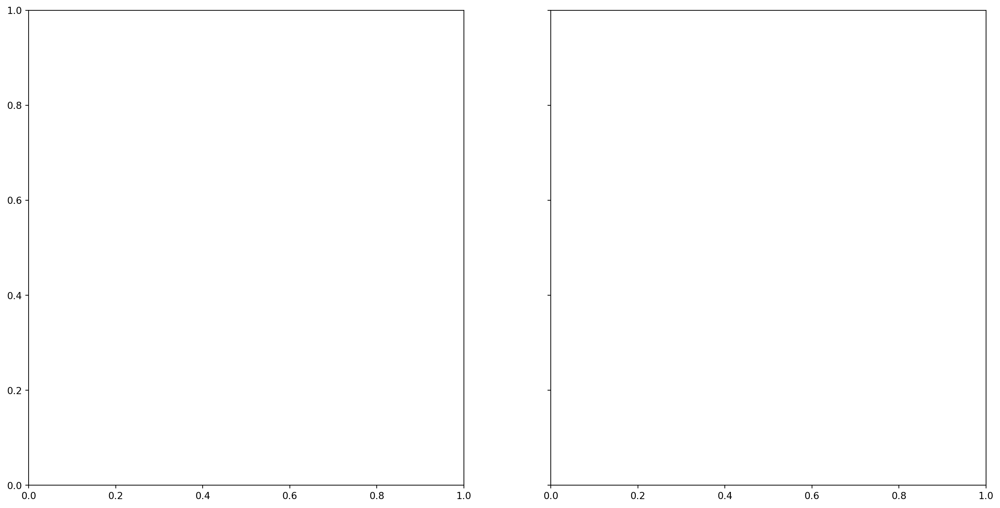

To teach the concept of image clustering for analysis of medical images using a publicly available data set. The course will introduce ideas on data optimisation techniques with a focus on data augmentation, to improve machine learning in small imaging datasets.
The basics of image clustering
Machine learning can also be used on images. One method is clustering. Clustering is a form of unsupervised learning in which you seperate a large set of data into smaller groups based on distaces between them. In terms of images, clustering can be used to reduce the number of colours used in an image.
In this exercise we will demonstrate how clustering can be used to measure the size of different dermatological features.
Let’s start by loading our first image from our directory and examining it’s features:
Make sure to download our data from here: https://github.com/winfrednyoroka/Imagedata_augmentation_analysis/tree/e979e5cfc7e21f7e1b5ff4c2187ef5a5fdae2cda/Data/Raw
from PIL import Imageimport numpy as npfrom skimage import ioimport matplotlib.pyplot as pltimg = Image.open("Working directory") #make sure to specify your own working directoryimg = np.array(img) #we need to first convert the image to a numpy array to ensure we can specify its dimensions print('Shape is', img.shape)print("Size is", img.size)
---------------------------------------------------------------------------ModuleNotFoundError Traceback (most recent call last)
Cell In[1], line 3 1fromPILimport Image
2importnumpyasnp----> 3fromskimageimport io
4importmatplotlib.pyplotasplt 6 img = Image.open("Working directory") #make sure to specify your own working directoryModuleNotFoundError: No module named 'skimage'
%matplotlib inlineio.imshow(img)plt.show()
---------------------------------------------------------------------------NameError Traceback (most recent call last)
Cell In[2], line 2 1 get_ipython().run_line_magic('matplotlib', 'inline')
----> 2io.imshow(img)
3 plt.show()
NameError: name 'io' is not defined
NOTE FOR DAN/PAU Is there a way we can load images straight from the github page to the notebook?
At the moment, the image is in 3 dimensions: 450 (height) x 600 (width) x 3 (colour). Color is 3 corresponding to RGB (red, green, blue). We want to flatten the image to two dimensional array (pixel x colour).
We then want to put this into a panda data frame for better plotting and processing. The data frame will have four columns: Red, Green, Blue and Colour - indicating the hex code of the pixel.
img = np.array(img, dtype=np.float64) /255# Scale valuesw, h, d = original_shape =tuple(img.shape) # Get the current shapeimg_array = np.reshape(img, (w * h, d)) # Reshape to to 2D#put into pandas data frame from pandas import DataFramepixels = DataFrame(img_array, columns=["Red", "Green", "Blue"])from matplotlib import colorspixels["colour"] = [colors.to_hex(p) for p in img_array]print(pixels)
---------------------------------------------------------------------------NameError Traceback (most recent call last)
Cell In[3], line 1----> 1 img = np.array(img, dtype=np.float64) /255# Scale values 2 w, h, d = original_shape =tuple(img.shape) # Get the current shape 3 img_array = np.reshape(img, (w * h, d)) # Reshape to to 2DNameError: name 'img' is not defined
Exploring the data
It is useful to plot the data before running the clustering.
Since we have a high amount of pixels (810000) running the algorithm may be slow. Therefore we can run it over a small subset of data.
pixels_sample = pixels.sample(frac=0.05) #look at 5% of the data
---------------------------------------------------------------------------NameError Traceback (most recent call last)
Cell In[4], line 1----> 1 pixels_sample =pixels.sample(frac=0.05) #look at 5% of the dataNameError: name 'pixels' is not defined
Since RGB pixels are a 3D dataset, we will plot three, 2D plots of the pairs red/green, red/blue and green/blue.
To make our lives easier, we can define a function plot_colours() which will plot the three pairs of columns against each other. To make the plots visually useful we will also colour each point in the plot with the colour of the pixel it came from using our fourth column, ‘Colour’.
import matplotlib.pyplot as pltdef plot_colours(df, c1, c2, c3):""" Given a DataFrame and three column names, plot the pairs against each other """ fig, ax = plt.subplots(1, 3) fig.set_size_inches(18, 6) df.plot.scatter(c1, c2, c=df["colour"], alpha=0.3, ax=ax[0]) df.plot.scatter(c1, c3, c=df["colour"], alpha=0.3, ax=ax[1]) df.plot.scatter(c2, c3, c=df["colour"], alpha=0.3, ax=ax[2])plot_colours(pixels_sample, "Red", "Green", "Blue")plt.show()
---------------------------------------------------------------------------NameError Traceback (most recent call last)
Cell In[5], line 16 12 df.plot.scatter(c1, c3, c=df["colour"], alpha=0.3, ax=ax[1])
13 df.plot.scatter(c2, c3, c=df["colour"], alpha=0.3, ax=ax[2])
---> 16 plot_colours(pixels_sample, "Red", "Green", "Blue")
17 plt.show()
NameError: name 'pixels_sample' is not defined
Sometimes viewing the data in 3D can help since planar projections can lose some nuances of the data. Display 3D plots using the mplot3d package.
---------------------------------------------------------------------------NameError Traceback (most recent call last)
Cell In[6], line 7 5 ax.set_ylabel("Green")
6 ax.set_zlabel("Blue")
----> 7 ax.scatter(pixels_sample["Red"], pixels_sample["Green"], pixels_sample["Blue"], c=pixels_sample["colour"])
8 plt.show()
NameError: name 'pixels_sample' is not defined

NOTE FOR DAN/PAU We’ve taken this descriptive task from the original image clustering training but we’re unsure what to provide as an interpretation for these graphs?
Assigning points to clusters
Now we can begin the clustering. We will be using a method called k-means clustering. It works by initialising K cluster centres, assigning each data point (pixel in this case) to the nearest centre. It then works through the datat set, assigning each pixel and updating the clusters if needed. The process continues until no more updates to the clusters are required.
We can run the clustering and display our cluster centres using the code below:
from sklearn.cluster import KMeanskmeans = KMeans(n_clusters=5, n_init="auto").fit(pixels_sample[["Red", "Green", "Blue"]])plt.imshow([kmeans.cluster_centers_])plt.show()
---------------------------------------------------------------------------NameError Traceback (most recent call last)
Cell In[7], line 3 1fromsklearn.clusterimport KMeans
----> 3 kmeans = KMeans(n_clusters=5, n_init="auto").fit(pixels_sample[["Red", "Green", "Blue"]])
4 plt.imshow([kmeans.cluster_centers_])
5 plt.show()
NameError: name 'pixels_sample' is not defined
Now we have our clusters which we can use as our representative clusters for the image. We can now go through the original image and assign each pixle to a cluster that it is nearest to.
---------------------------------------------------------------------------NameError Traceback (most recent call last)
Cell In[8], line 1----> 1 labels =kmeans.predict(pixels[["Red", "Green", "Blue"]])
2 labels
NameError: name 'kmeans' is not defined
To quantify these predictions we can plot a bar graph to show how many pixles are in each cluster
from pandas import DataFrame, Series%matplotlib inlineSeries(labels).value_counts(sort=False).plot.bar(color=kmeans.cluster_centers_)plt.show()
---------------------------------------------------------------------------NameError Traceback (most recent call last)
Cell In[9], line 4 1frompandasimport DataFrame, Series
2 get_ipython().run_line_magic('matplotlib', 'inline')
----> 4 Series(labels).value_counts(sort=False).plot.bar(color=kmeans.cluster_centers_)
5 plt.show()
NameError: name 'labels' is not defined
To assess how well the algorithim has clustered the images, we can plot the clustered pixels next to the original image to obsever the differences.
First we need to convert our clustered pixels back to a 3D array (width x height x colour):
reduced = np.array([kmeans.cluster_centers_[p] for p in labels]).reshape(original_shape)
---------------------------------------------------------------------------NameError Traceback (most recent call last)
Cell In[10], line 1----> 1 reduced = np.array([kmeans.cluster_centers_[p] for p inlabels]).reshape(original_shape)
NameError: name 'labels' is not defined
---------------------------------------------------------------------------NameError Traceback (most recent call last)
Cell In[11], line 2 1 f, axarr = plt.subplots(1, 2, sharex=True, sharey=True, figsize=(18, 9))
----> 2 axarr[0].imshow(img)
3 axarr[0].set_title("Original")
4 axarr[1].imshow(reduced)
NameError: name 'img' is not defined

Here it has a done a pretty good job at identfying the main darker spots, but finer features such as hair are undefined. We could try to improve this by increasing the number of clusters.
What number of clusters do you think if sufficient to define all features?
Set the number of clusters to 2. Does this sufficiently distinguish between mole and not mole?
Exercise: Take a look at another image clustering exercise here. It explains different methods for colouring space. Have a go at using and comparing the different methods?
In the next step we are going to use this clustering technique to measure the surface area of dermatological features in a set of 3 images. This could be used as a technique to measure features in a large data set that are hard or tedious to quantify.
First we need to load and inspect the images in the same way we did in the previous exercise
from PIL import Imageimport numpy as npfrom skimage import ioimport matplotlib.pyplot as plt#image 1img1 = Image.open("./Data/Raw/mole.jpg") #make sure to specify your own working directoryimg1 = np.array(img1)print('Image 1 shape is', img1.shape)print("Image 1 size is", img1.size)%matplotlib inlineio.imshow(img1)plt.show()#image 2img2 = Image.open("") #make sure to specify your own working directoryimg2 = np.array(img2)print('Image 2 shape is', img2.shape)print("Image 2 size is", img2.size)%matplotlib inlineio.imshow(img2)plt.show()#image 3img3 = Image.open("") #make sure to specify your own working directoryimg3 = np.array(img3)print('Image 3 shape is', img3.shape)print("Image 3 size is", img3.size)%matplotlib inlineio.imshow(img3)plt.show()
---------------------------------------------------------------------------ModuleNotFoundError Traceback (most recent call last)
Cell In[12], line 3 1fromPILimport Image
2importnumpyasnp----> 3fromskimageimport io
4importmatplotlib.pyplotasplt 6#image 1ModuleNotFoundError: No module named 'skimage'
We also need to flatten them and convert into a pandas data frames
from pandas import DataFramefrom matplotlib import colors#image 1img1 = np.array(img1, dtype=np.float64) /255# Scale valuesw, h, d = original_shape =tuple(img1.shape) # Get the current shapeimg1_array = np.reshape(img1, (w * h, d)) # Reshape to to 2Dpixels1 = DataFrame(img1_array, columns=["Red", "Green", "Blue"]) #convert to pandaspixels1["colour"] = [colors.to_hex(p) for p in img1_array] #add colours column print(pixels1)#image 2img2 = np.array(img2, dtype=np.float64) /255# Scale valuesw, h, d = original_shape =tuple(img2.shape) # Get the current shapeimg2_array = np.reshape(img2, (w * h, d)) # Reshape to to 2Dpixels2 = DataFrame(img2_array, columns=["Red", "Green", "Blue"]) #convert to pandaspixels2["colour"] = [colors.to_hex(p) for p in img2_array] #add colours column print(pixels2)#image 3img3 = np.array(img3, dtype=np.float64) /255# Scale valuesw, h, d = original_shape =tuple(img3.shape) # Get the current shapeimg3_array = np.reshape(img3, (w * h, d)) # Reshape to to 2Dpixels3 = DataFrame(img3_array, columns=["Red", "Green", "Blue"]) #convert to pandaspixels3["colour"] = [colors.to_hex(p) for p in img3_array] #add colours column print(pixels3)
---------------------------------------------------------------------------NameError Traceback (most recent call last)
Cell In[13], line 5 2frommatplotlibimport colors
4#image 1----> 5 img1 = np.array(img1, dtype=np.float64) /255# Scale values 6 w, h, d = original_shape =tuple(img1.shape) # Get the current shape 7 img1_array = np.reshape(img1, (w * h, d)) # Reshape to to 2DNameError: name 'img1' is not defined
Exercise: At the moment we are loading and editing each image seperately - this can be time consuming with large data sets. How can we make this process faster?
Answer: For loop CODE TO BE ADDED FOLLOWING REVIEW
To run the clustering on a set of images we need to stack the data frames into one. We will add a new column to indicate which image the data came from.
#first we need to add a new column to our data sets to indicate which image they came from import pandas as pdpixels1['image'] ='1'pixels2['image'] ='2'pixels3['image'] ='3'pixels = pd.concat([pixels1, pixels2, pixels3], ignore_index =True, axis =0) #axis 0 indicates stacking verticalluprint(pixels)
---------------------------------------------------------------------------NameError Traceback (most recent call last)
Cell In[14], line 4 1#first we need to add a new column to our data sets to indicate which image they came from 2importpandasaspd----> 4pixels1['image'] ='1' 5 pixels2['image'] ='2' 6 pixels3['image'] ='3'NameError: name 'pixels1' is not defined
Exercise Explore the data in the same was as the previous exercise. Do you notice anything from the correlations?
We can now run K-means clustering in the same way as before. First by sampling a subset of pixels and assign our cluster centres. In order to compare the size of the dermatological features across the images, we want to measure the pixels that are and aren’t dark space. We could try to use 2 clusters for this.
pixels_sample = pixels.sample(frac=0.05) #look at 5% of the datafrom sklearn.cluster import KMeanskmeans = KMeans(n_clusters=2, n_init="auto").fit(pixels_sample[["Red", "Green", "Blue"]])plt.imshow([kmeans.cluster_centers_])plt.show()
---------------------------------------------------------------------------NameError Traceback (most recent call last)
Cell In[15], line 1----> 1 pixels_sample =pixels.sample(frac=0.05) #look at 5% of the data 3fromsklearn.clusterimport KMeans
5 kmeans = KMeans(n_clusters=2, n_init="auto").fit(pixels_sample[["Red", "Green", "Blue"]])
NameError: name 'pixels' is not defined
In the same way as before see how it looks compared to the original image. Does two clusters sufficiently define the dark areas. NOTECould make this an exercise?
We can now run our clustering with our whole data set.
---------------------------------------------------------------------------NameError Traceback (most recent call last)
Cell In[16], line 1----> 1 labels =kmeans.predict(pixels[["Red", "Green", "Blue"]])
2 labels
NameError: name 'kmeans' is not defined
Now we have used the clustering algorithm to cluster pixels into dark and light areas, we can manipulate our data frame to compare the size of the features in the images.
First we want to add the clustering array to the pandas data frame
#add the clustering array as a new column pixels['cluster'] = labels.tolist()print(pixels)
---------------------------------------------------------------------------NameError Traceback (most recent call last)
Cell In[17], line 3 1#add the clustering array as a new column ----> 3 pixels['cluster'] =labels.tolist()
4print(pixels)
NameError: name 'labels' is not defined
We can then plot the amount of dark space for each image
# Filter only rows where cluster == 0pixels_fil = pixels[pixels["cluster"] ==1]# Count occurrences of cluster 0 per imagedark_counts= pixels_fil["image"].value_counts()# Plot the bar chartplt.figure(figsize=(8, 5))dark_counts.plot(kind="bar")plt.show()
---------------------------------------------------------------------------NameError Traceback (most recent call last)
Cell In[18], line 2 1# Filter only rows where cluster == 0----> 2 pixels_fil =pixels[pixels["cluster"] ==1]
4# Count occurrences of cluster 0 per image 5 dark_counts= pixels_fil["image"].value_counts()
NameError: name 'pixels' is not defined
In a real data set we would have lots of different images. Using clustering this way would save time in measuring images.
Can you think of other applications? Cell types on slides - how many clusters would you want then?
Data augmentation
Data augmentation is a technique of artificially increasing the training set by creating modified copies of a dataset using existing data.
Aimed at creating new data points, manipulating existing data to increase the size and diversity of a dataset.
Why is it important?
Enhanced Model performance.
Data augmentation techniques help enrich datasets by creating many variations of existing data. This provides a larger dataset for training and enables a model to encounter more diverse features. The augmented data helps the model better generalize to unseen data and improve its overall performance in real-world environments.
To prevent models from overfitting.
Overfitting is the undesirable ML behavior where a model can accurately provide predictions for training data but it struggles with new data. If a model trains only with a narrow dataset, it can become overfit and can give predictions related to only that specific data type.
The initial training set is too small.
To improve the model accuracy.
If you need to train a deep learning model on sensitive data, you can use augmentation techniques on the existing data to create synthetic data.
To reduce the operational cost of labeling and cleaning the raw dataset.
Data augmentation techniques increase the effectiveness of smaller datasets, vastly reducing the dependency on large datasets in training environments.
Example use case 1. Health care - Image analysis.
Useful technology in medical imaging because it helps improve diagnostic models that detect, recognize, and diagnose diseases based on images. The creation of an augmented image provides more training data for models, especially for rare diseases that lack source data variations. The production and use of synthetic patient data advances medical research while respecting all data privacy considerations.
How do you achieve Image data augmentation?
In image processing, applying transformations like rotations, flips, or color adjustments to existing images can help models generalize better.
Other transformations are:
Color space transformations: randomly change RGB color channels, contrast, and brightness.
Kernel filters: randomly change the sharpness or blurring of the image.
Random erasing: delete some part of the initial image.
Mixing images: blending and mixing multiple images.
Geometric Transfromations
Geometrictransformations
# Load the necessary librariesimport skimageimport matplotlib.pyplot as pltimport matplotlibimport numpy as npfrom skimage import data ## Inbuilt dataset within scikit-imagefrom skimage import io, transform, filters, exposurematplotlib.rcParams['font.size'] =18
---------------------------------------------------------------------------ModuleNotFoundError Traceback (most recent call last)
Cell In[19], line 2 1# Load the necessary libraries----> 2importskimage 3importmatplotlib.pyplotasplt 4importmatplotlibModuleNotFoundError: No module named 'skimage'
# Load inbuilt skin dataset from scikit-imageimage = data.skin()image # displays an array representing the imageplt.imshow(image) # Visualise the original image
---------------------------------------------------------------------------NameError Traceback (most recent call last)
Cell In[20], line 2 1# Load inbuilt skin dataset from scikit-image----> 2 image =data.skin()
3 image # displays an array representing the image 4 plt.imshow(image) # Visualise the original imageNameError: name 'data' is not defined
---------------------------------------------------------------------------NameError Traceback (most recent call last)
Cell In[21], line 2 1# Rotate the image----> 2 rotated =transform.rotate(image, 90) # Rotate 90 degrees 3 plt.imshow(rotated)
NameError: name 'transform' is not defined
Flip the image horizontally
# Flip the image horizontallyflipped_h = image[:, ::-1]plt.imshow(flipped_h)
---------------------------------------------------------------------------NameError Traceback (most recent call last)
Cell In[22], line 2 1# Flip the image horizontally----> 2 flipped_h =image[:, ::-1]
3 plt.imshow(flipped_h)
NameError: name 'image' is not defined
Flip the image vertically
flipped_v = image[::-1, :] plt.imshow(flipped_v)
---------------------------------------------------------------------------NameError Traceback (most recent call last)
Cell In[23], line 1----> 1 flipped_v =image[::-1, :]
2 plt.imshow(flipped_v)
NameError: name 'image' is not defined
Blur the image
# Blur the imageblurred = filters.gaussian(image, sigma=2)plt.imshow(blurred)
---------------------------------------------------------------------------NameError Traceback (most recent call last)
Cell In[24], line 2 1# Blur the image----> 2 blurred =filters.gaussian(image, sigma=2)
3 plt.imshow(blurred)
NameError: name 'filters' is not defined